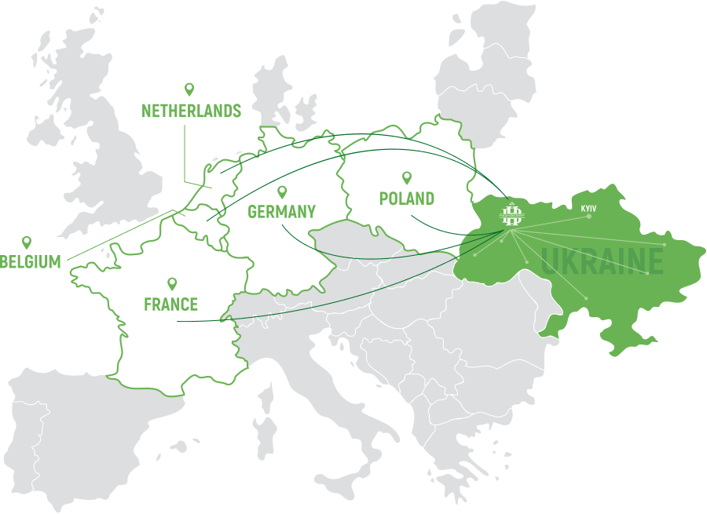
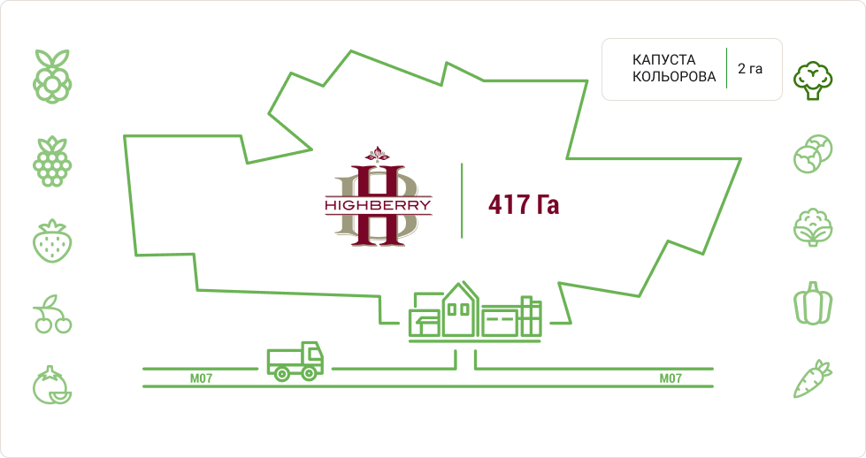
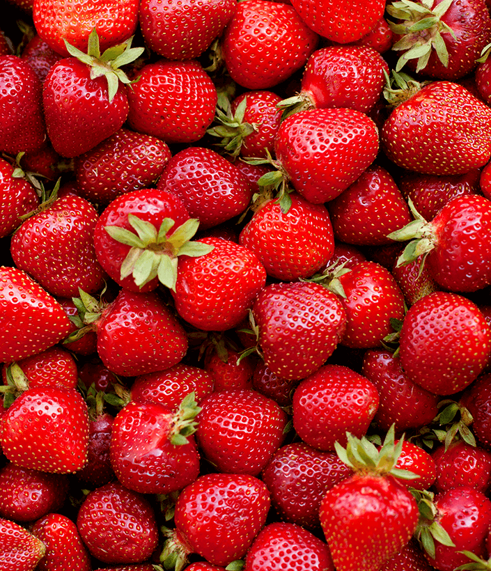
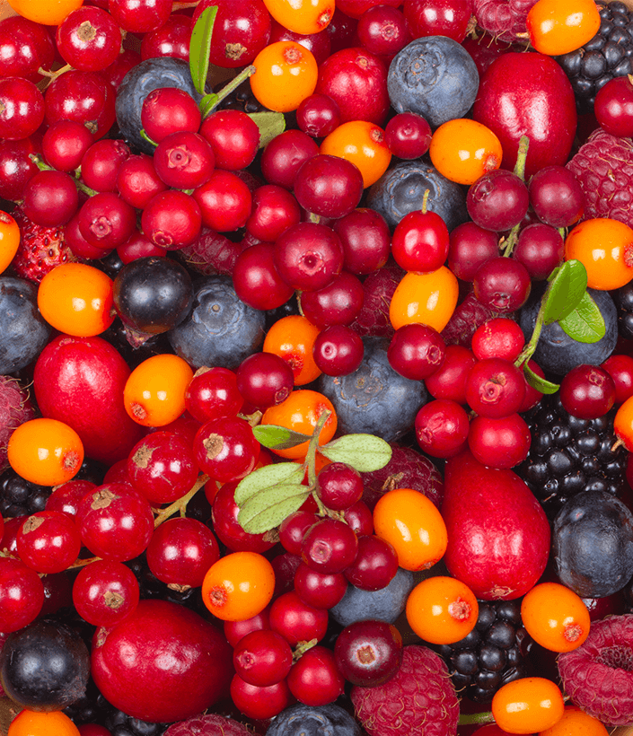
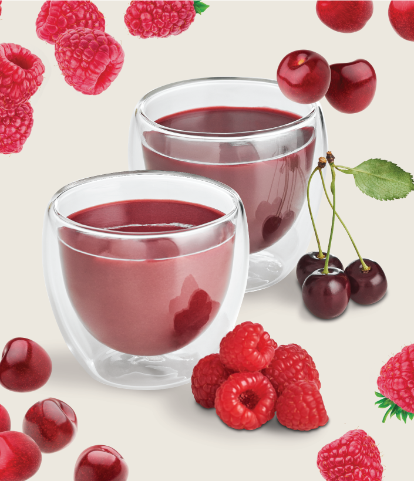
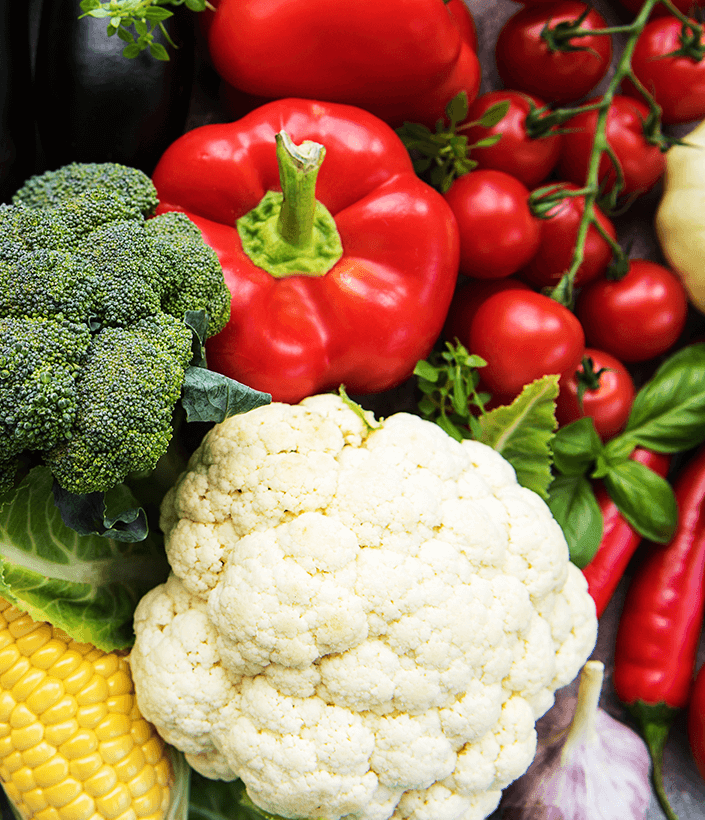
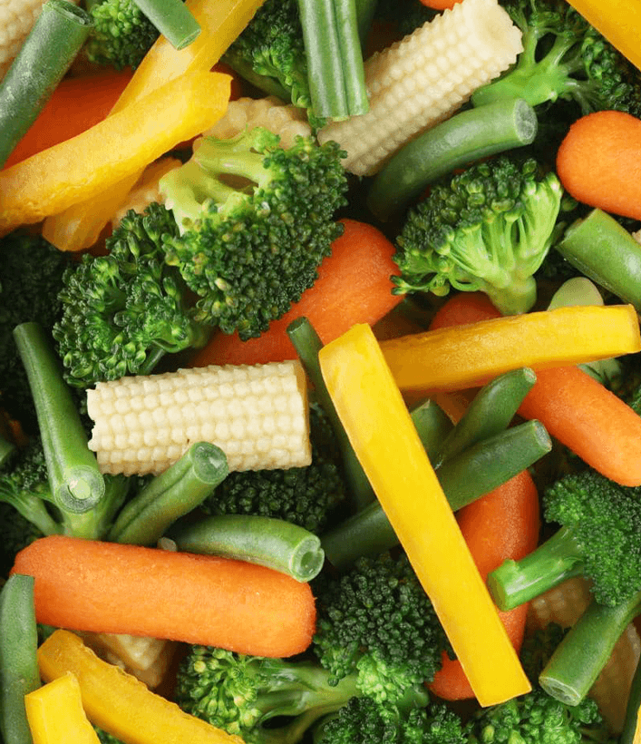
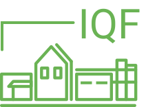
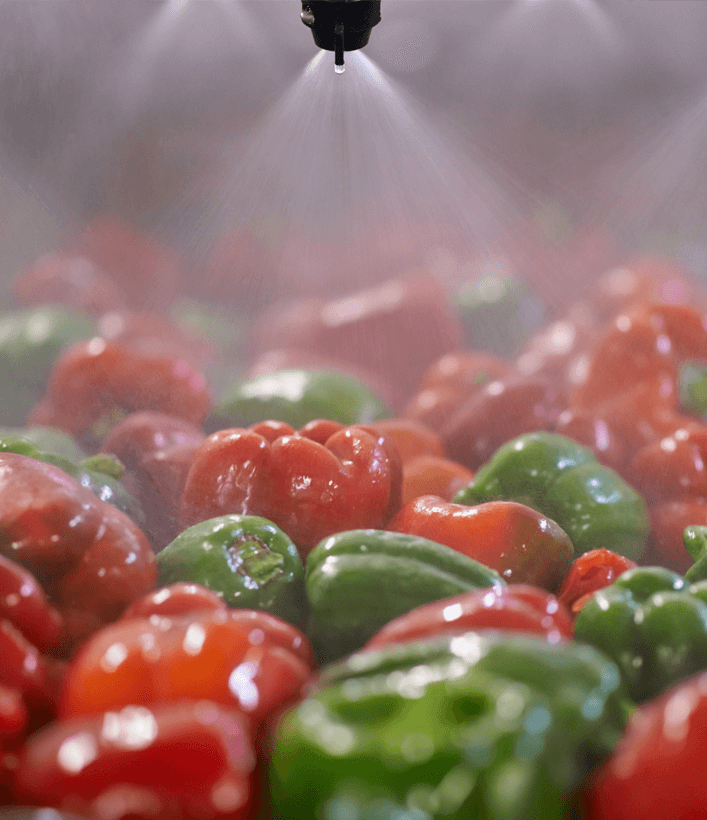
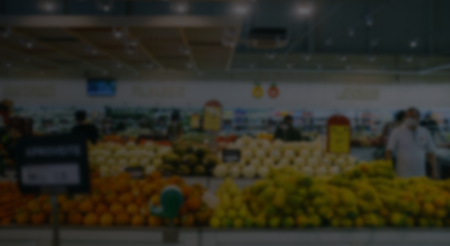

Агровиробний комплекс «HIGHBERRY» задовольняє попит українського та європейського споживача сучасним й високоякісним продуктом абсолютної якості за рахунок власного вирощування та власного виробництва.
Вигідне географічне розташування та близькість до європейського кордону дозволяють скоротити затримки часу при транспортуванні продукції до наших клієнтів в Україні та експорті до країн Європи. ДІЗНАТИСЯ БІЛЬШЕ →

Площа: 54 га
Врожайність: 1225 т
Сорт: Хоней, Зенга Зенгана, Флоренс, Румба
Період збору врожаю: червень-липень
ДІЗНАТИСЯ БІЛЬШЕ →Площа 25,3 га
Очікувана врожайність ≈ 200 т
Сорт: Полка, Херітейдж, Полана
Період збору врожаю: серпень-жовтень
ДІЗНАТИСЯ БІЛЬШЕ →Площа 1 га
Очікувана врожайність ≈ 50 т
Сорт: Тітус, Крептон
Період збору врожаю: жовтень-листопад
ДІЗНАТИСЯ БІЛЬШЕ →Площа 88,2 га
Очікувана врожайність ≈ 1000 т
Сорт: Лутовка, Ерді, Дебрецена-Ботермо
Період збору врожаю: липень
ДІЗНАТИСЯ БІЛЬШЕ →Площа 45 га
Очікувана врожайність ≈ 800 т
Сорт: Монако, Партеон, Вавілон, Бесті, Корос, Монрело
Період збору врожаю: червень-липень, вересень-жовтень
ДІЗНАТИСЯ БІЛЬШЕ →Площа 18 га
Очікувана врожайність ≈ 100 т
Сорт: Ардей
Період збору врожаю: липень, жовтень, листопад
ДІЗНАТИСЯ БІЛЬШЕ →Площа 6 га
Очікувана врожайність ≈ 100 т
Сорт: Профітус, Абакус
Період збору врожаю: вересень-жовтень
ДІЗНАТИСЯ БІЛЬШЕ →Площа 7 га
Очікувана врожайність ≈ 400 т
Сорт: Геркулес, Абей, Амаретто, Хаскі, Вангард, Фламінго
Період збору врожаю: серпень-вересень
ДІЗНАТИСЯ БІЛЬШЕ →Площа 4 га
Очікувана врожайність ≈ 400 т
Сорт: Ред Скай
Період збору врожаю: серпень-жовтень
ДІЗНАТИСЯ БІЛЬШЕ →Площа 10 га
Очікувана врожайність ≈ 1000 т
Сорт: Абако, Бангор, Болівар, Дордонь, Елеганс, Романс
Період збору врожаю: вересень
ДІЗНАТИСЯ БІЛЬШЕ →
Агропромисловий комплекс "HIGHBERRY" постійно вдосконалює технологію вирощування культур, отримуючи максимальний обсяг врожаю з одного гектара.
Єдиний агрономічний аналіз у кожному господарстві всієї партії гарантує продукцію, обрану на наших полях.
Особливу увагу приділяємо раціональному використанню та контролю за нормами внесення добрив і засобів захисту рослин. ДІЗНАТИСЯ БІЛЬШЕ →





Полуниця, малина, ожина, вишня
ДІЗНАТИСЯ БІЛЬШЕ →Ожина, журавлина, калина, чорниця...
ДІЗНАТИСЯ БІЛЬШЕ →полуничне і малинове пюре без кісточок
ДІЗНАТИСЯ БІЛЬШЕ →броколі, брюссельська капуста, цвітна капуста, болгарський перець, помідор, морква
ДІЗНАТИСЯ БІЛЬШЕ →суміші овочів, ягід і фруктів
ДІЗНАТИСЯ БІЛЬШЕ →
Агровиробничий комплекс "HIGHBERRY" має власний завод з переробки та заморожування ягід, фруктів, овочів, різноманітних фруктово-овочевих сумішей та ін. в промислових масштабах.
Заморожування відбувається за технологією IQF, завдяки сучасному високотехнологічному оснащенню, що дозволяє виготовляти 50-60 т продукції на добу. ДІЗНАТИСЯ БІЛЬШЕ →

Процес переробки ягід, фруктів та овочів завжди починається з миття та сушіння продукції. В залежності від виду овочів та фруктів для миття ми використовуємо машини м'якого або жорсткого миття. ДІЗНАТИСЯ БІЛЬШЕ —
Процес швидкого прогрівання продуктів парою. Позбавляє від гіркоти та різкого запаху, дозволяє зберегти колір та аромату продукту. Бланшована продукція не потребує подальшої кулінарної обробки. ДІЗНАТИСЯ БІЛЬШЕ —
Процес глибокого очищення овочів від бруду та піску, залишків хімічних речовин, полірування та позбавлення продукції від кожухи, або шкірки. ДІЗНАТИСЯ БІЛЬШЕ —
Наші кісточковибивні машини призначені для вилучення кісточок зі свіжих вишень та слив. Продуктивність виробництва — до 60 т на добу. Завод “HIGHBERRY” також оснащений машиною для видалення серцевини яблука. ДІЗНАТИСЯ БІЛЬШЕ —
Можлива нарізка кубиками / соломкою / кільцями / скибочками Промислові шинкувальні машини призначені для нарізки кубиками, соломкою, кільцями або скибочками великого асортименту овочів та коренеплодів. Функція регулювання подрібнювання та широкий асортимент ножів й решіток дозволяє налаштовувати машини для нарізки продуктів різним калібром та товщиною. ДІЗНАТИСЯ БІЛЬШЕ —
Процес утворення тонкого шару льодяної глазурі на поверхні хрестоцвітих, а саме броколі та кольорової капусти. Це захищає продукт від виморожування та розпадання суцвіття. Дозволяє зберігати форму та колір близькими до свіжих протягом усього терміну зберігання. Після глазурування продукція зберігає високу якість та розсипчастість, добре фасується.ДІЗНАТИСЯ БІЛЬШЕ —
Процес провіювання, відділення ягід від стебел, плодоніжок, хвостиків та листочків на шнеку.ДІЗНАТИСЯ БІЛЬШЕ —
Наш завод обладнаний промисловими калібраторами та конвейєром, для механічного розділу на фракції сировини. За їх допомогою, в процесі калібрування, йде відсів занадто мілких фракцій та відбувається сортування ягід, фруктів та овочів.ДІЗНАТИСЯ БІЛЬШЕ —
Інспекція — це найвідповідальніший із процесів, саме тому цю функцію довірено людині. Незамінні на виробництві професійні інспекційні столи-конвеєри зі спеціальним освітленням є запорукою якісного та успішного виконання заходів контролю.ДІЗНАТИСЯ БІЛЬШЕ —
Особливе місце серед технологічних процесів займає фасування та пакування продукції. Пакувальне обладнання є універсальним, це дозволяє упаковувати як свіжу, так і заморожену продукцію різних типів – овочі, фрукти, ягоди, суміші вагою від 400г до 25кг.ДІЗНАТИСЯ БІЛЬШЕ —
Заморожування — це ефективний метод консервування продуктів шляхом зниження їх температури нижче точки замерзання води (зазвичай -18 і нижче), що зупиняє розвиток мікроорганізмів та зберігає поживність.ДІЗНАТИСЯ БІЛЬШЕ —
